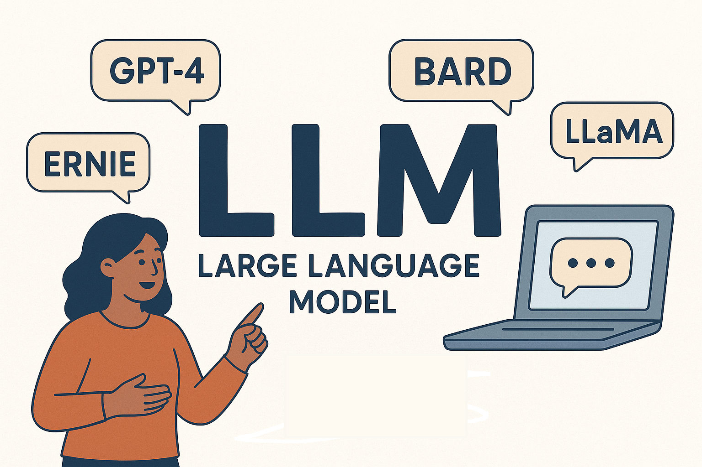

Qu'est-ce qu'un LLM ?
Un LLM, ou "Large Language Model", est un modèle d'intelligence artificielle conçu pour comprendre et générer du texte en langage naturel. Ces modèles sont entraînés sur d'énormes quantités de données textuelles, leur permettant de prédire le mot suivant dans une phrase ou de répondre à des questions complexes.
Comment fonctionnent les IA actuelles ?
Les IA modernes, comme les LLM, utilisent des réseaux de neurones profonds pour analyser des données et apprendre des modèles. Voici les étapes principales :
- Entraînement : Les modèles sont formés sur des milliards de phrases pour comprendre les relations entre les mots.
- Compréhension : Une fois entraînés, ils peuvent analyser des requêtes en langage naturel et en extraire le sens.
- Génération : En fonction de la requête, ils produisent des réponses cohérentes et pertinentes.

LLMs et les chats IA
Les LLMs sont au cœur de nombreux chats IA. Par exemple :
- GPT : Utilisé par ChatGPT, développé par OpenAI.
- Llama : Développé par Meta AI, utilisé dans des applications spécifiques.
- Modèles personnalisés : Certaines IA comme Perplexity ou Copilot utilisent des grands modèles comme GPT et les adaptent à leurs besoins spécifiques.
Ces adaptations permettent de répondre à des cas d'utilisation variés, allant de l'assistance au codage à la recherche d'informations.

Réseau de Neurones Artificiels
Cette animation simplifiée illustre le fonctionnement d'un réseau de neurones. Les signaux voyagent des neurones d'entrée vers les neurones de sortie en passant par des couches cachées.
Comment fonctionne un réseau de neurones ?
Un réseau de neurones artificiels s'inspire du fonctionnement du cerveau humain. Il est composé de couches de neurones interconnectés :
• Couche d'entrée : Reçoit les données brutes
• Couches cachées : Traitent l'information en calculant des combinaisons complexes
• Couche de sortie : Produit le résultat final
Chaque connexion entre neurones a un "poids" qui influence l'importance du signal transmis. Pendant l'apprentissage, ces poids sont ajustés pour améliorer la précision des résultats.